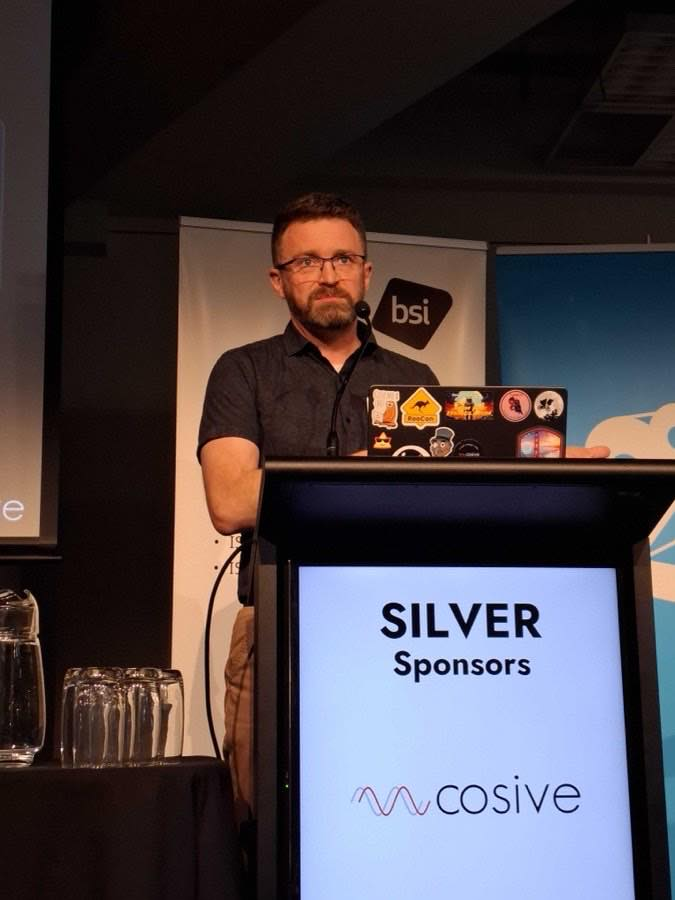

Option A
Full-bleed proof band
The room is the credential. Photo edge to edge in colour, darkened only where type sits; the five claims run across the foot of the band instead of stacking down one half of it.

Option B
Pinned portrait, editorial claims
Asymmetric rather than split down the middle. The portrait is shown whole at its own 3:4 instead of being cropped into a half-page slab, and the claims get room to breathe as large-type rows.

Cosive's Prescott Pym, a CTI-CMM contributor, presenting at NZITF.
Why work with us
We helped build the model we assess you against
{{c.lead}}
{{c.plain}}
Option C
Textured, no photo
No photography at all — the dot grid and sinewave field the site now uses on dark bands. Each claim becomes a full-width row: check, the claim at scale, the evidence beside it.